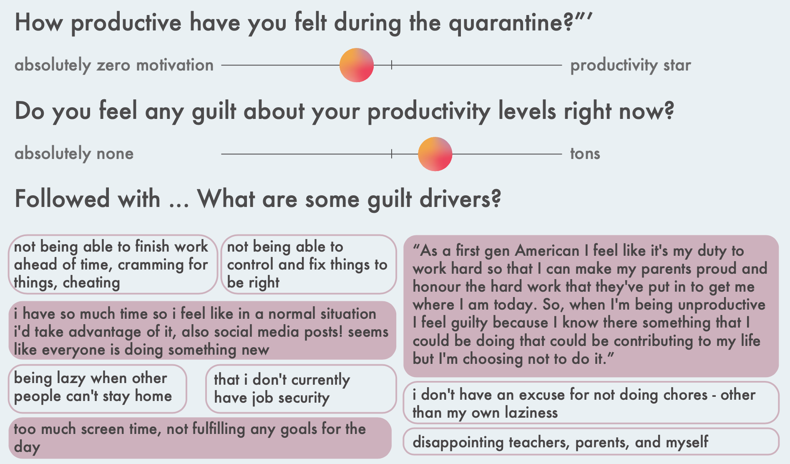
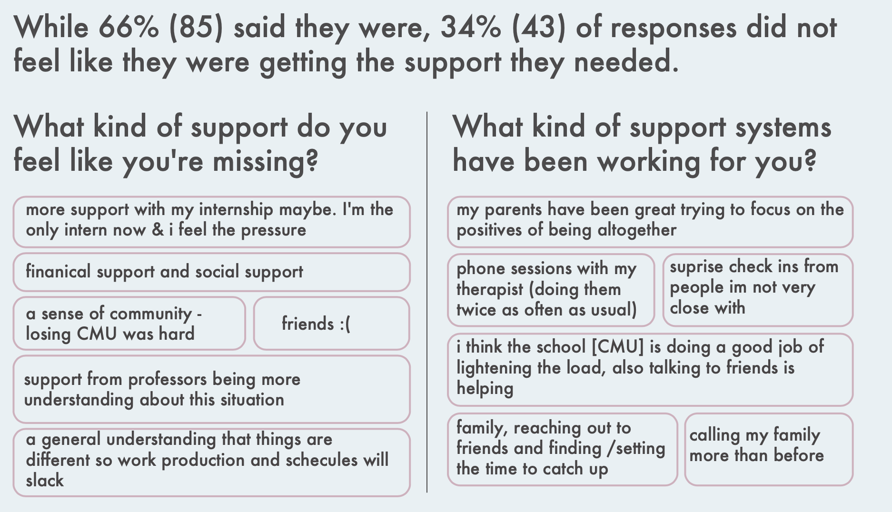
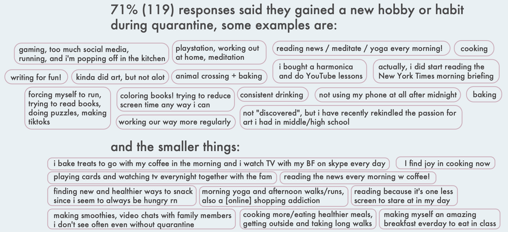
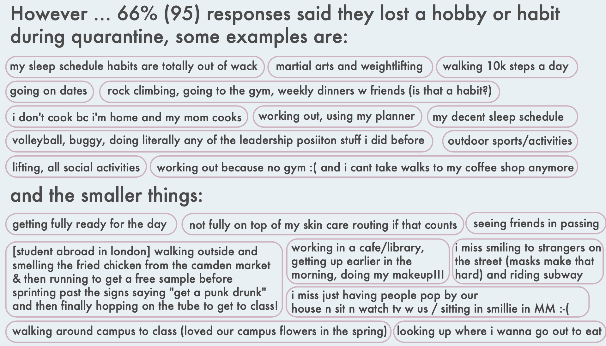
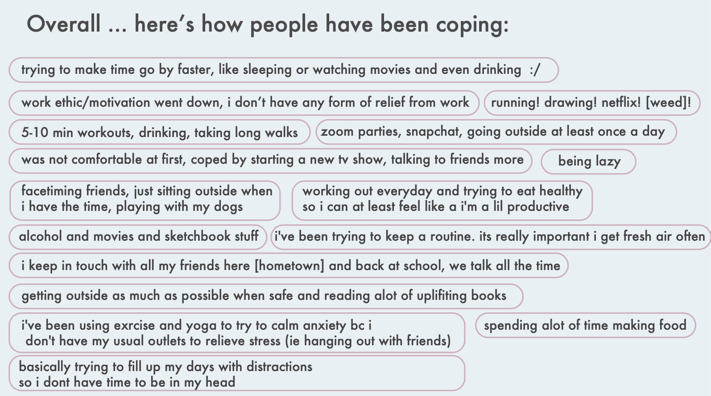
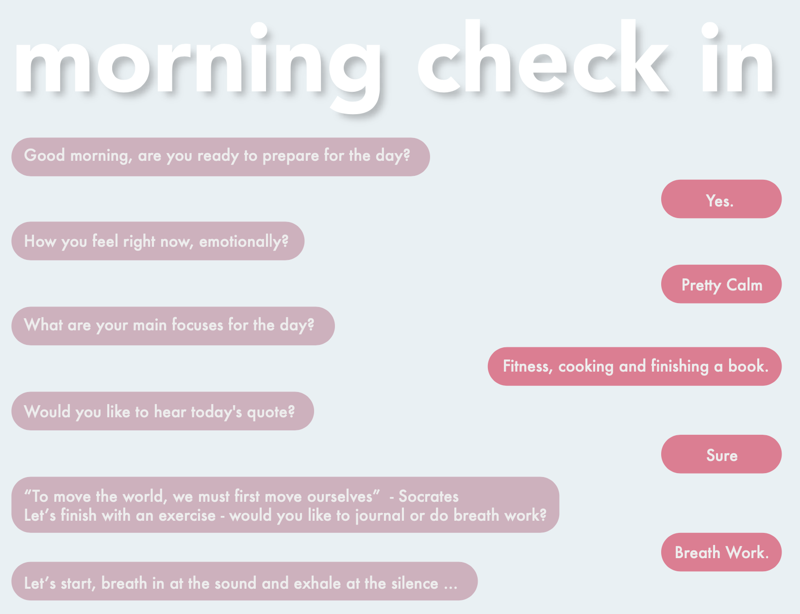
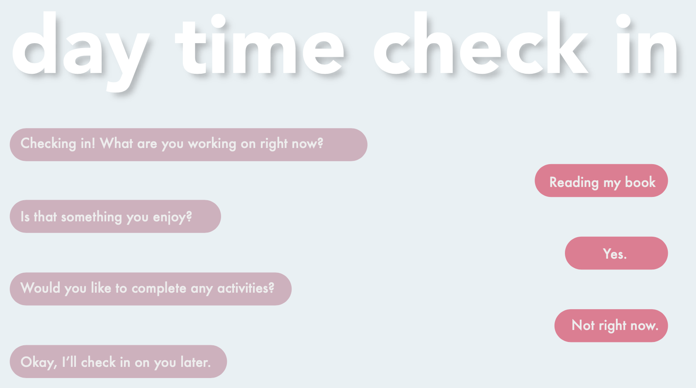

COVID-19 is not the rapid apocalypse Hollywoodloves, but it is a monumental cultural period that is changing the way we live. The level of restriction put on individuals ranges in severity and duration under different national and local governments, but what remains the same for all is this is hard.
I began research by looking into peopleʼs emotional state and asking how theyʼre dealing with quarantine as individuals - exploring routine and habits lost or gained during this time.
Surveys done through Instagram Story polls.

As well as four long form interviews with peers:
1. Early professional in the entertainment industry, graduated CMU 2 years ago, male
2. Freshman drama student at CMU, female
3. Junior International Relations and Politics Student, currently “abroad” in Washington D.C.
4. Group interview with three college age sisters and single mother, the freshman and junior are student athletes at St. Mary's College and the senior is in Dietrich at CMU

How might we reframe how we see productivity during this time and what can we create to best foster motivation and productivity in a healthy way for individuals?
Morning Check In
Setting the dayʼs intention and priorities.
Evening Check In
Evening reflection and adaptations
“Random” Check Ins
In moment updating and reflections



activity variety
mediation
breathing exercises
guided or unguided journaling
guided examples: gratitude practice, planning - day, year, next milestone, day summary
setting a daily intention or mantra
quote reflection
fear setting, thought challenging, negative visualization, etc.
People want to reduce screen time
Voice is Powerful
Talk therapy, self talk, manifesting
Ability to mimic the intimacy of a roommate
Life will likely not go back to “normal” as we know it.
Increase of primarily home-based workers, and increase WFH days
Marriage rates are lowering and age of those who marry is increasing
Increase in one person homes and percent of americans living alone
Forward Ideas: shift into different demographics - older individuals + teens